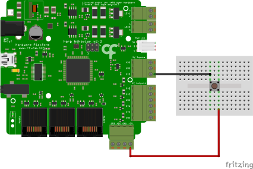

Digital Input
Summary
This example demonstrates how to get the digital input values from a switch using the Harp Behavior board (see hardware schematics below).
Workflow
Details
- Creates a subject node to send commands to the Behavior board and publishes all the events from the device. The PortName property in the Behavior node needs to be set to the COM device on the computer. To create the subject node, right-click on the Behavior node -> Create Source -> Behavior Subject, and name it accordingly.
- Filters event messages associated with the state of digital inputs.
- Demultiplexes the decimal values associated with the state of the digital ports into an array of bits, each indicating the state of a specific port.
- Converts the bit array from Mat to byte[].
- Gets the fourth element of the byte array (as an integer value), which corresponds to the digital input port 3 (DI3).
- Enables the Behavior board to send out events associated with DI3.
- Ensures that command messages are sent only when the device is ready.
Requirements
This example requires the following Bonsai packages:
- Harp - Behavior (from nuget.org)
Schematics
The Harp Behavior board has four digital input channels: DIPort0, DIPort1, DIPort2, and DI3. The maximum tolerable voltage at these ports is 5V. In this example, the board receives a digital input signal from a switch connected to DI3.
